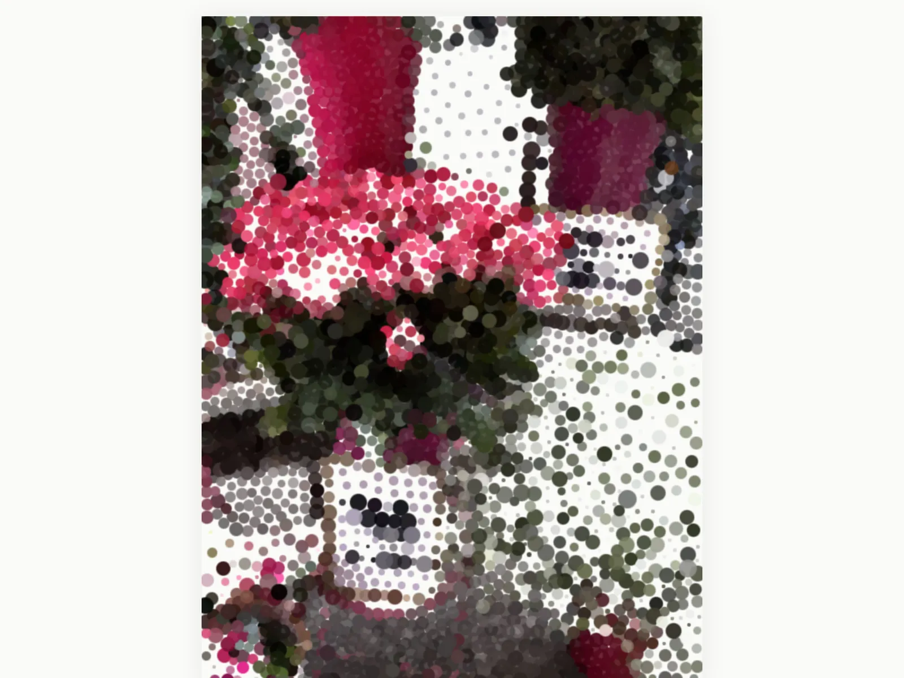

PROJECT NOTES / 2026.08
BLOOM Photo
Turn a photograph into a particle artwork that grows from a point you choose

BLOOM Photo turns a still photograph into a growing particle artwork. Choose an image, pick the point where it begins to bloom, and watch its colors and details unfold into a new composition.
The controls invite small experiments with structure, particle shape, color, size, and growth. Start with your own photograph or explore the built-in bouquet, then keep a single moment as a high-resolution PNG or save the unfolding motion as an MP4.
Image processing, rendering, and export happen locally in the browser. The photograph stays on your device while you explore how it can become something new.